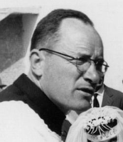
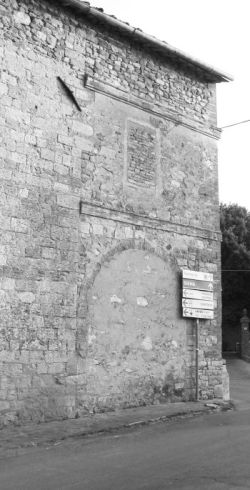

Quercegrossa (Ricordi e memorie)
CAPITOLO VIII - STORIA RELIGIOSA
Indice dei Capitoli
Indice Storia religiosa
Ottorino Bucalossi (1950-1968)

Don Ottorino, ossia il “Signor Curato” come era chiamato da tutto il popolo con una forma di rispetto, successe a don Luigi Grandi, o meglio dire a quei sacerdoti incaricati dall’Arcivescovo di portare un aiuto all’anziano parroco nell’amministrare le cose spirituali di Quercegrossa nei mesi immediatamente precedenti l’arrivo di don Ottorino. Già dal ‘48 don Luigi Mori in forma ufficiosa, ma ancor prima a titolo personale, sosteneva don Grandi nella liturgia e nei momenti più forti come le feste. Poi venne inviato anche don Francesco, la cui memoria è ancor viva per essere stato sacerdote attivo e propositivo di tante iniziative. “Don Francesco prete senese venne mandato per aiutare don Luigi ed era un uomo aperto a tutti e in quei tempi venne apprezzato e quando andò via fu una mezza tragedia. Poi venne un certo don Pietrino, un prete piccino, ma vi rimase poco e infine don Ottorino”.
Per questo tutti si aspettavano la nomina di don Francesco, quanto invece l’Arcivescovo decise diversamente e spedì don Francesco all’Alberino e a Quercegrossa mandò lo sconosciuto don Bucalossi. Il 15 febbraio 1950, lo stesso giorno della nomina di don Ottorino, era stato assegnato economo spirituale a Quercegrossa don Piero Sampieri parroco di Basciano, per affrontare l’emergenza di qualche mese in attesa dell’arrivo del nuovo curato, il quale non si fece attendere a lungo.
Le note anagrafiche di don Ottorino iniziano a Certaldo dove nasce l’8 febbraio 1920 da Livio e Giuseppa detta “Beppina”. Compiuti gli studi superiori a Siena e teologici nel seminario di Siena, viene ordinato sacerdote il 27 giugno 1943 da mons. Toccabelli.
La prima esperienza la compie a S. Pietro Apostolo a Radi dal 19 giugno 1944, una modesta parrocchia dove riceve i primi apprezzamenti per il suo operato considerando anche le contingenti difficoltà di quegli anni: “Il novello parroco di Radi non esito a dire che si è dimostrato un Apostolo caritatevole che ha saputo sollevare gli animi dei buoni radesi con superiore senso di carità cristiana di fede e di abnegazione... Questa è la miglior garanzia che anche in futuro sarà per noi un buon pastore ... e per ciò ringrazio Lei Ecc.za Rev.ma per la buona scelta che ha fatta...” scrive il marchese Ridolfo Bichi Ruspoli Forteguerri possidente di quelle terre. Dal primo ottobre 1945 riceve la nomina di economo spirituale a Campriano e di parroco dal 1° dicembre 1948 con la fusione delle due parrocchie. Segue la nomina diretta dell’Arcivescovo del 15 febbraio 1950 a Quercegrossa dove fa il suo ingresso il 24 marzo successivo accolto quasi trionfalmente dal popolo in festa schierato lungo la strada fin dal Leccino Nuovo, insieme alla scolaresca, e dalle parole di benvenuto di una bimba: “Benvenuto a Quercegrossa, un paese gentile, di gente perbene, a modino, benvenuto don Ottorino”. Gli vennero offerti una cotta e una mozzetta (una mantellina corta) con un mazzo di garofani poi, “preceduto da un lungo corteo di fedeli”, accompagnato da don Petrilli e dai sacerdoti dei dintorni, fece il solenne ingresso in chiesa. Nella sua prima omelia ringraziò per l’immensa gioia che il primo contatto con quelle anime gli aveva dato e invitò tutti a stringersi sempre intorno a lui.
Trascorsero ben 19 anni, pieni di ogni soddisfazione, ma anche di tante delusioni, infine la mesta partenza per Fontegiusta in Siena, rettore di quella chiesa e collaboratore del parroco della Magione. Mi trovavo una mattina nella cucina della canonica con don Ottorino, quando lui estrasse una lettera di tasca e si apprestò a leggerla sottovoce, accostandosi alla finestra per avere una migliore visibilità. Poi all’improvviso mi guardò, rivolgendomi con voce rattristata poche, ma significative, parole: “Allora Lorenzo, vo via, sai”. Un moto di dispiacere mi prese per quest’uomo che aveva dato tutto sé stesso e anche di più alla parrocchia: “Don Ottorino aveva impiegato in parrocchia i proventi della casa venduta e ci spendeva tutto quello che aveva”, e ora si sentiva tradito. Pagava certamente per alcuni errori fatti in buonafede, e per quella sua intransigenza, intesa come testardaggine, che una parte del popolo non gli aveva mai perdonato. Non seppi rispondergli, mai avrei immaginato tal cosa. Per noi giovani era un’istituzione inamovibile perchè con lui eravamo cresciuti in un continuo ciclo partecipativo fatto di innumerevoli iniziative parrocchiali alle quali aveva sempre corrisposto tutta la popolazione, e nelle righe seguenti ben si comprende tutto ciò.
Dopo l’immobilismo, o se si vuol dire la gestione ordinaria e comprensiva degli ultimi anni dell’anziano don Grandi, don Ottorino si presentò subito come un ciclone riformando il concetto stesso di parroco in un popolo abituato ormai all’acquiescenza. Mise mano in modo costruttivo in ogni settore dell’attività pastorale e soprattutto ricreativa, fino allora del tutto assente, assumendo inoltre posizioni decise, secondo il rigido indirizzo della Chiesa, nella contrapposizione politica fra “bianchi” e “rossi” che minava in quegli anni la concordia in ogni popolo, e alla quale a Quercegrossa non erano abituati.
Animato da una mentalità salesiana don Ottorino vide nell’attività oratoriana il momento essenziale per una pastorale efficace per i giovani, realizzando attraverso il gioco e la ricreazione il coinvolgimento dei ragazzi in momenti di preghiera e di formazione. Per tal fine, l’anno dopo del suo arrivo, mise mano all’ambizioso progetto di costruire sul terreno della parrocchia, di fronte alla canonica, un centro parrocchiale per creare quell’attività e assistenza fino allora mancanti e ci riuscì coll’aiuto della popolazione e dei tanti muratori che prestarono gratis la loro opera. Nella relazione progettuale del 30 maggio 1951 ci sono ambiziosi traguardi per più finalità: scuola, asilo, lavoro per giovinette, ambulatorio, locali di ricreazione ed educazione con circolo per adulti, catechismo e dopolavoro per giovinetti, locale ad uso cinema e teatro per la popolazione. Questo progetto iniziale, in verità un po’ grandioso per le casse della parrocchia e le tasche dei parrocchiani, prevedeva molti ambienti: una sala cinematografica di 90 posti, una stanza per ambulatorio con servizio igienico; cucina per l’asilo con dispensa; un ingresso comune e due servizi igienici comuni; refettorio per 20 bambini; locale di lavoro; locale doposcuola; locale per il catechismo e altro; il tutto compreso in un corpo centrale e due ali. Ma l’opera realizzata in economia fu inferiore al progetto, realizzando comunque un bell’edificio con due sale delle quali una venne destinata a sala cinematografica, incontri e ricreazione, e l’altra, separata da una rampetta interna a larghi gradini, a bar. Tuttociò servì egregiamente alle intenzioni di don Ottorino e divenne un centro frequentato. In particolare le proiezioni cinematografiche esercitarono un grande richiamo diventando un appuntamento domenicale irrinunciabile per molti. L’apertura del bar, gestito da donne del paese e affiliato alle ACLI, diede inizio al gioco delle carte con apertura serale cui seguì un pallinaio, la televisione e molti anni dopo il biliardo.
I componenti del coro parrocchiale con don Ottorino. Da sinistra: Pierina Giulianini, Anna Bernardeschi, Alba Losi, Rita Torzoli, Iolanda Riversi, Lea Oretti, Dina Mori, Dino Palazzi, Alda Losi, don Ottorino, Bruno Sestini, Angiolo Landi, Angelo Polato, Franco Starnini, Silvano Socci e Giorgio Marri.
Alcune ragazze con la signorina Bruna Bucalossi. Da sinistra: Annunziata Mori, Maria Travagli, x, Alba Losi, Rosaria Costanzi, Vanda Castagnini e la signorina Bruna.
Cena in casa Bucalossi: i genitori di don Ottorino, Giuseppa e Livio, ripresi nella cucina posta a destra dell’ingresso alla cononica.
Per le ragazze, un numeroso gruppo frequentava la parrocchia sotto la guida e l’occhio vigile della “signorina Bruna”, sua sorella, organizzò un corso di cucito (1953) con buona frequenza tenuto da una maestra di Siena. Appena preso possesso della parrocchia don Ottorino ebbe modo di guardarsi intorno e vide una realtà parrocchiale piuttosto bisognosa nelle sue necessità socio economiche e volle intervenire anche in questo delicato settore. Coadiuvato da alcuni laici, con Silvano Socci in primo piano, fondò la Misericordia di Quercegrossa, associata a quella di Siena, la quale promosse subito i rammentati armadietti farmaceutici distribuiti omogeneamente sul territorio, il corso di pronto soccorso e altro. Sul piano della pastorale e dell’insegnamento organizzò subito il catechismo domenicale con l’ausilio delle ragazze del paese, dando alcuni anni più tardi a Oriana Maggi di Passeggeri l’incarico di insegnare catechismo a quei lontani, in tutti i sensi, ragazzi di quel luogo. Nel 1952: “La scuola della Dottrina Cristiana è ben organizzata in 6 classi con 5 catechiste e il parroco”. Appena ebbe in mano un buon numero di ragazzi, li istruì al servizio della Messa, e ne ricavò un gruppo di fidati sagrestani che lo servirono fino all’ultimo. Promosse l’Azione cattolica tesserando tutti, piccoli e grandi, allora inquadrati nelle fiamme rosse, fiamme verdi, aspiranti, gioventù femminile ecc. con interventi da Siena per riunioni e conferenze. Organizzò il doposcuola per un bel gruppo di scolari al quale anch’io partecipai nel 1955/56: “Si mangiava una pastasciutta o una minestra e un modesto secondo di formaggino o una fettina di bologna(riceveva forniture per comunità) . Dopo un po’ di ricreazione si facevano i compiti. Alcuni nell’ingresso, altri nel salottino di sopra intorno al tavolo dove c'era una signorina che aiutava i ragazzi”. In più concesse i locali per la scuola serale. Una cosa non riuscì al Curato e per la quale aveva in mente di far venire delle suore da Siena, ma le tante difficoltà incontrate di ordine economico e logistico gli impedirono di aprire l’asilo per bambini al quale teneva. Promosse anche la diffusione della stampa cattolica: della “Famiglia Cristiana” con l’abbonamento a diverse famiglie aumentate nel tempo ad una trentina, con incarico della distribuzione a Dina Oretti; la vendita della “Voce del Popolo” all’accatto della Messa, e una piccola biblioteca per i ragazzi. Dalla risposta proveniente da Roma, datata 5 dicembre 1952, veniamo a conoscenza di un finanziamento ottenuto dal Vaticano di lire 300.000 per la domanda “diretta ad ottenere un sussidio per provvedere della necessaria attrezzatura e giochi la sua sala parrocchiale”. Sono quei giochi coi quali abbiamo passato tante ore in letizia e allegria. Per il Natale iniziò la recita delle poesie al presepio che preparava in quel piccolo ambiente a sinistra dell’altare, o in fondo di chiesa con belle e numerose statue, e la visita dei presepi presso le famiglie. Nel carnevale radunò tutte le mascherine: tanti ragazzi indossavano gli abiti di cartacrespa nel salone parrocchiale dando poi vita alle sfilate in paese con allegorie in piccoli carri di cartapesta. Inoltre, organizzò nel salone i festeggiamenti di uno storico “ultimo dell’anno 1956” con un bel ricordo fotografico della serata.

Quando don Ottorino mise piede nella nostra chiesa, pur affollata per la circostanza della sua entratura, certamente ebbe tempo di constatarne la modesta estensione con una capienza ormai insufficiente per la numerosa popolazione di oltre 600 anime, e tra i primi suoi obiettivi mise l’ampliamento della chiesa, realizzato cinque anni dopo nel 1955. Ma ciò avvenne tra mugugni e proteste perchè dovette eliminare il porticato, tanto caro ai popolani, tamponandone gli archi e inglobandolo nell’ interno della chiesa e smontare la cantoria.
L’intervento di tamponamento e sopraelevazione alla loggia fatto fare da don Ottorino che suscitò tante polemiche in parrocchia.
Questo intervento edile realizzato da Dino Castagnini, con i sassi prelevati dai campi dei Cipressini e portati con il carro dai contadini tra i quali il giovane Bruno Mecacci, riuscì a meraviglia e la lunghezza della navata si accrebbe di circa 8 metri. Il lavoro, finanziato anche con 400.000 lire ricevute il 15 marzo 1954 per lavori da effettuare a seguito dei danni di guerra e forse dalle 450.000 ricevute nel luglio 1955 dal Ministero dai fondi per i parroci bisognosi, non venne apprezzato da molti per i motivi suesposti. A don Ottorino, accusato di aver deciso unilateralmente senza consultare il popolo, non venne mai perdonato l’operato e rimase per sempre quello che aveva distrutto gli archi e sciupato la chiesa. Non dimentichiamoci però di quando, già agli inizi del Novecento, gli esperti proponevano di demolire l’antiestetica e inutile loggetta, e comunque la chiesa ne guadagnò molto in spazio anche se la facciata rimase incompiuta per molti anni e così anche la porta a causa della mancanza di fondi restò un grezzo e bruttissimo legno tanto da sentirmi dire: “Ma che ci avete una porta di stalla alla chiesa”.
Rendendosi conto del rilassamento religioso del suo gregge, derivato dalla lotta politica e da anni in cui aveva vivacchiato con l’anziano don Grandi, per sensibilizzare tutto il popolo, in occasione dell’Anno santo, promosse le missioni a Quercegrossa con l’intento soprattutto di riportare alla chiesa gli allontanati e i peccatori come avveniva di fatto in quasi tutte le parrocchie in quell’anno particolare e nei successivi. Doveva servire anche di preparazione del primo pellegrinaggio parrocchiale a Roma.
Furono otto giorni di preghiere celebrazioni e prediche con due sacerdoti don Faeti e don Monciatti come missionari. Ebbe un’idea originale e “istallò sul campanile 4 trombe direzionali, che dal poggio di Vagliagli si udiva la messa come ad essere presente in Chiesa, la sera il prete istruito e il prete ignorante si confrontavano nei vari argomenti inerenti la fede. Alla gente piacque questo modo di predicare e venne numerosa”. Nello stesso 1950, sulla scia di quelle pie e ben riuscite iniziative, accolse la Madonna di Fatima, pellegrina nelle parrocchie del senese. Venne portata la sera a Petroio, poi a Passeggeri, ed esposta nelle cappelle con funzioni e messe, e infine a Macialla nel piazzale, sistemata sotto la capanna dove era stato allestito un altare adornato da fiori e petali sparsi intorno. La sera venne riportata in parrocchia e il giorno dopo consegnata al popolo di S. Leonino con le due processioni che si incontrarono alle Quattro vie. “La statua della Madonna era grande e veniva portata a spalla con aste e un piano, con scambio di gente per portarla”.
Dopo le missioni partì la prima gita pellegrinaggio parrocchiale a Roma di due giorni. Viaggiarono in treno, c’erano anche Dante Oretti con la moglie Dina, e alloggiarono in un modesto pellegrinaio, serviti male anche a tavola. Parteciparono tutti i frequentatori delle chiesa animati dal senso religioso dell’avvenimento, ma anche da spirito partitico: “Chi andava a Roma era anti....” e infatti la parte avversa social-comunista locale e nazionale non si stancava di ripetere attraverso i suoi organi sulla natura esclusivamente politica di queste iniziative di una Chiesa asservita al partito al governo ossia la Democrazia Cristiana. Ora con un aneddoto voglio meglio definire la figura di don Ottorino e con quanta convinzione condusse la sua lotta personale contro tutto ciò che sapeva di comunismo: “In Società facevano pubblicità ai giocolanti per la domenica sera che c'era anche il cinema. Don Ottorino, contrariato da questa concorrenza, fece intervenire la SIAE perché non erano in regola con il borderaux. Intervennero i carabinieri, ma suscitò le proteste dei giocolanti che reclamavano il loro diritto a lavorare”. Allora don Ottorino per quella domenica sospese il cinema, e fece rappresentare lo spettacolo nel Circolo della parrocchia dove intervennero tutti. Era l’anno 1953. Nel 1952 don Ottorino ripropone le missioni tenute da don Giuseppe Faeti e don Alvaro Monciatti, con buon esito, e culminate con la visita pastorale dell’arcivescovo Toccabelli del 9 marzo conclusasi con la processione pomeridiana, come ci racconta il verbale della giornata di mons. Morbidi: ”Alle ore 16 si snoda la processione col quadro della Madonna, vi partecipano quasi totalitariamente con molta compostezza e pietà. Al ritorno in chiesa parla sulla devozione alla Madonna il missionario D. Monciatti, poi prende la parola S. E. Mons. Arcivescovo per congratularsi col popolo per la buona riuscita della Missione, ringrazia i Missionari e congratularsi col parroco”. Sembrava tutto a posto, ma, invece, c’è una considerazione preoccupante, indice di un cambiamento in atto: “Questa notte c'è stata la veglia degli uomini con la S. Messa e la S. Comunione cui si sono accostati in numero di … Purtroppo è mancata la gioventù: la gioventù maschile al completo e buona parte anche della gioventù femminile della campagna”. Poi la mattina: “La chiesa è al completo: più che altro donne, figlioli e ragazzi con qualche uomo”. Ancora nel 1953 sono riproposte le missioni, abbinate alla Crociata del S. Rosario, con la partecipazione del famoso padre Droetto il 6 ottobre.
Nel 1956 fa richiesta all’Arcivescovo di poter celebrare una terza messa domenicale avendo da celebrare una volta al mese anche a Petroio e Passeggeri dove intervengono dalle venti alle trenta persone. Sensibile al problema missionario don Ottorino chiamò più volte a rendere testimonianza mons. Staccioli invitato nel 1956 alla vigilia della sua partenza per il Laos; poi fu di nuovo a Quercegrossa nel 1957 e infine nel 1963, quando incontrò un nutrito gruppo di fedeli e sostenitori facendolo partecipe delle sue esperienze in quella terra lontana destando stupore e curiosità. Così come invitava il famoso “Padre Volante”, ossia don Giancarlo, allora frate cappuccino e futuro parroco del Poggiolo, con prediche in chiesa e conferenze nel salone dove proiettava diapositive dei suoi viaggi. Don Ottorino aveva passione per la tecnica di ripresa sia cinematografica, 8mm, sia fotografica: non mancò di documentare le gite parrocchiali e altri momenti importanti come le feste, il carnevale ecc. e alcune sue foto sono qui pubblicate. Già nelle Missioni del 1950 aveva fatto venire da Siena un operatore cinematografico, in quel momento al servizio della Curia senese, il quale aveva ripreso la processione con tutto il popolo, ma purtroppo questa pellicola è introvabile. Le rammentate gite parrocchiali continuarono quasi annualmente e dopo Roma venne compiuta nel 1952 a San Marino e ci volle una vita per arrivare e ritornare su strade allora poco scorrevoli. Poi La Verna, Monte Nero e altri santuari. Si giunse anche a organizzarle in due giorni con un pernottamento e si ricordano Montecarlo - Nizza, Courmayeur - Monte Bianco, Venezia e Redipuglia ecc. Preghiera alla partenza, al ritorno, e Rosario serale.
Dopo i ruggenti anni Cinquanta l’attività sia pastorale sia ricreativa di don Ottorino divenne di routine. Alcune iniziative cessarono per mancanza di motivazioni e soprattutto di fondi e il parroco fece il suo onesto dovere nella liturgia e nella pastorale in anni in cui evidente si fece la diminuzione dei fedeli, “vi è stato un declino” scrive il parroco, e la popolazione si ridusse a 450 persone.
Applicò, non so con quanto entusiasmo, le direttive del Concilio Vaticano e disse la prima messa in italiano.
Don Ottorino passò dalla moto alla Cinquecento e, mentre il cinema e il bar uno dopo l’altro chiudevano i battenti, lui era assillato dalla ricerca di fondi per restaurare la chiesa e mettere le campane elettriche, quando il popolo ormai insofferente al continuo chiedere rimaneva insensibile. Nel 1968 nel 25° anniversario del suo sacerdozio installò una terza campana chiedendo soldi ai parrocchiani. Alienò la terra vicino alla Magione (550.000 lire) e cedette parte dell’orto parrocchiale a Giulio Manganelli (400.000 lire) nel 1967, con il ricavato da destinare ai lavori in quattro stanze per un quartierino e suggerì anche di trasformare il fabbricato della stalla ormai vuoto, in due appartamenti. Poi il trasferimento, con questi progetti rimasti nel cassetto, e il “Signor Curato” entrò a far parte, bene o male, dei ricordi di Quercia: le sue messe celebrate con tutti i sentimenti, ma molti rammentano i suoi vangeli lunghi 20 minuti; i suoi familiari, persone perbene e miti come il babbo Livio, che rivedo pregare all’inginocchiatoio in sacrestia da dove ascoltava la messa, e morto a Quercegrossa il 2 febbraio 1968; Beppina, massaia sempre indaffarata; la sorella Bruna, quasi un vice parroco, e il fratello Ermanno tornato poi a Milano.
Dopo Quercegrossa don Ottorino è rettore a Fontegiusta e dal 1973 parroco di S. Petronilla, dove si ritrova per collaboratore don Enzo Cupani e correttore dell’Istrice. In seguito è rettore di S. Stefano alla Lizza, Vicario in Castelvecchio e poi in S. Martino, dove risiede diversi anni. Infine S. Andrea dove attualmente quasi novantenne trascorre la sua vecchiaia e dove pochi anni fa ha avuto il gran dolore di perdere la sorella Bruna alla quale era molto affezionato.
A don Ottorino successero don Pierino Carlini (1968-1989), senese dei Pispini e deceduto il 28 giugno 1996; don Ugo Montagner (1989-1991), nativo di S. Donà di Piave, oggi missionario in Brasile, e infine don Giulio Salusti, nato a Castignano di Ascoli Piceno il 30.6.1935, da genitori originari di Teramo, parroco dal 1991.
Paragrafo successivo
I Preti di Quercegrossa
Inizio pagina
Vai all'Indice dei Capitoli
|